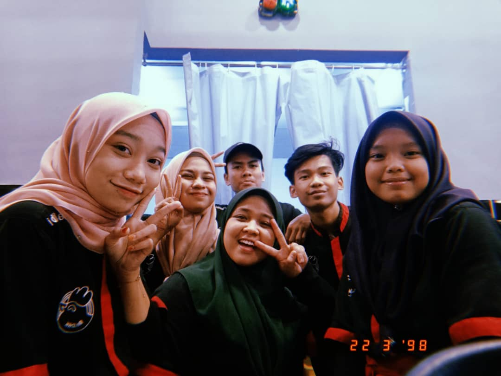

| Azera's Working Experience. |
|

Right after SPM, I decided to work before i get any University offers. I just wanted to gain money so I can pay the fees by myself. I work at Mr. Dakgalbi, Rawang for almost 6 month. I start working withouth any knowledge about this restaurant. Actually, the story of how i get this work is very interesting! Let me share it. In the end of Dicember, I decided to find a job for myself since I dont have anything to do at home, so I went to Aeon Rawang to find any job that could duit me. At that time, I was having lunch with my aunt and her colleagues at Nandos. We were having a conversation about where should I find job. One of my aunt's colleagues then recommend me to ask the nearest bakery either they open vacancies or not, and I was like "okay, I'll try contact the bakery later". After we finish lunch, my aunt was about to go back to her office and I just followed her just to say goodbye. Then we stop at a korean restaurant and my aunt saw the vacansy memo infront that restaurant, she then pushed me to the restaurant's entrance. I was panicked at that time because I dont know what shoul I ask.I ended up speaking Malay to the manager who was standing in front the counter and she said "I'm korean, I cant speak Malay" It was so embarassing! Then I started calm down and ask her if I can apply the vacancy. One of her staff and also my friend, Sam came towards us and he start explaining about the job scope, wages per hour (since I'm newbie, I have to work part time before being a full time staff) and uniform. I noded proove that I'm understand. The manager, Ms Hana then ask me to start working tomorrow at 3 pm. I was shocked that she accept me right away! Then, I start my daily life as floor's staff where I need to take order and cook for the customer. The experiences was valueable for me! From this job, I learn how korean serve their customer, a perfect manner that korean apply in their country and ofcourse the main thing is, their food. Now, I am in my final year of Diploma but I still manage to work partime job since all of the class is currently in online mood. So, I take this opportunity to gain more experiences. Last time, I was working for a korean and now I am working for a Malaysian. It is very different but I will get used to it. |